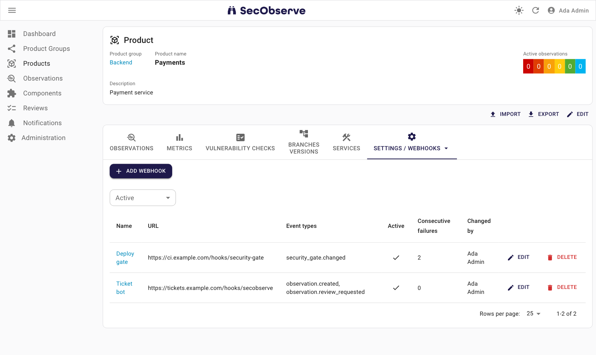
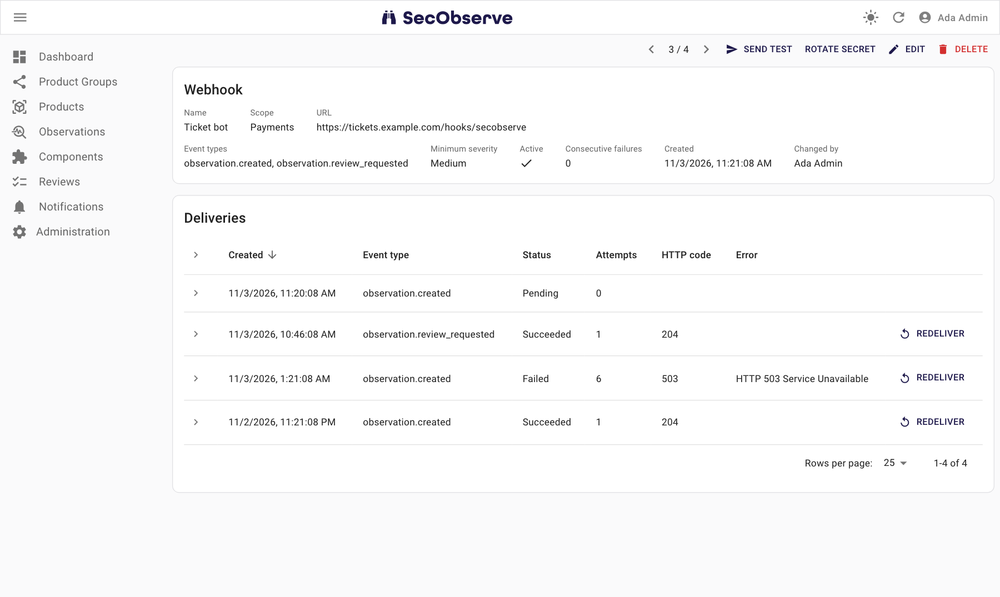

Standard Webhooks
Webhooks send SecObserve events to your own HTTP endpoints, to drive automation: open a ticket for a new observation, ask the approvers of an assessment in a chat, or stop a deployment when the security gate fails. The requests are signed JSON following Standard Webhooks, so libraries for many languages can verify them. Messages for MS Teams, Slack and email are described in Notification channels.
Set up a webhook
The webhooks of a product are in Settings → Webhooks of the product, those of a product group in its Webhooks tab. Global webhooks, which get the events of all products, are in Administration → Webhooks.

- Click Add webhook, enter a name and the URL of your receiver, and choose the event types. A minimum severity limits the observation and assessment events.
- Copy the secret from the dialog that follows. It is shown only once, Rotate secret creates a new one.
- Store the secret in your receiver, open the webhook by clicking its name and click Send test.
The page of a webhook, opened by clicking its name, shows who changed it last and lists its deliveries with status, attempts and HTTP code. Click a delivery to see its payload, Redeliver sends it again.

Who can manage a webhook depends on its scope:
| Scope | Receives the events of | Managed by |
|---|---|---|
| Product | the product | Maintainer and Owner of the product |
| Product group | all products of the group | Maintainer and Owner of the product group |
| Global | all products, and general rules | Superusers |
Readers and Writers can view the webhooks of their products.
Webhook URLs are visible to all members
Every member of a product can list its webhooks with their URLs, even with the role Upload. Do not put credentials into webhook URLs, the signature authenticates the requests.
Webhooks and deliveries can also be managed with the REST API, see /api/webhooks/ and /api/webhook_deliveries/ in its OpenAPI documentation.
Events
| Event type | Sent when | data contains |
|---|---|---|
observation.created |
An import or a user creates an observation that is active after rules and VEX statements. | product, observation |
observation.review_requested |
An observation gets the status "In review". | product, observation |
assessment.approval_requested |
An assessment needs approval. | product, observation, assessment |
assessment.approval_decided |
An assessment is approved or rejected, see assessment.assessment_status. |
product, observation, assessment |
rule.approval_requested |
A rule needs approval. | product, rule |
rule.approval_decided |
A rule is approved or rejected, see rule.approval_status. |
product, rule |
import.completed |
An import of observations has finished: file upload, API import, OSV or VulnerableCode scan. | product, import with the numbers of new, updated and resolved observations |
security_gate.changed |
The security gate of the product changed between passed, failed and not evaluated. | product, whose security_gate_passed is the new state |
With a minimum severity (min_severity), a webhook gets the observation.* and assessment.* events only for observations with at least this severity. The other events are not filtered by severity.
General rules belong to no product: product is null and only global webhooks get their events.
A test request has the type webhook.test.
Every request has the same envelope, for example:
{
"type": "observation.created",
"timestamp": "2026-11-02T08:15:30.123456+00:00",
"data": {
"product": {
"id": 7,
"name": "Payments",
"product_group": {"id": 2, "name": "Backend"},
"security_gate_passed": true,
"url": "https://secobserve.example.com/#/products/7/show"
},
"observation": {
"id": 1234,
"title": "Prototype pollution in lodash",
"severity": "High",
"status": "Open",
"priority": null,
"vulnerability_id": "CVE-2021-23337",
"component": "lodash:4.17.15",
"branch": "main",
"service": null,
"scanner": "Trivy",
"url": "https://secobserve.example.com/#/observations/1234/show"
}
}
}
The delivery log of a webhook keeps the exact payload of every event. Fields are only ever added, never renamed or removed.
Untrusted data
Titles, component names and comments come from scanners and users. Treat them as data, never as code or commands.
Verify requests
Each delivery is a POST with these headers:
| Header | Value |
|---|---|
webhook-id |
ID of the event, the same on every retry. |
webhook-timestamp |
Time of the attempt in Unix seconds. |
webhook-signature |
v1, and the base64 encoded HMAC-SHA256 of {webhook-id}.{webhook-timestamp}.{body}. The key is the base64 decoded part of the secret after whsec_. |
A Standard Webhooks library verifies these headers, or check them yourself, for example in Python:
import base64, hashlib, hmac, time
def verify(secret: str, headers, body: bytes) -> bool:
try:
key = base64.b64decode(secret.removeprefix("whsec_"))
msg_id, timestamp = headers["webhook-id"], headers["webhook-timestamp"]
if abs(time.time() - int(timestamp)) > 300:
return False
except (KeyError, ValueError):
return False
signed = f"{msg_id}.{timestamp}.".encode() + body
expected = "v1," + base64.b64encode(hmac.new(key, signed, hashlib.sha256).digest()).decode()
return any(hmac.compare_digest(expected, s) for s in headers.get("webhook-signature", "").split())
A good receiver verifies the raw body before parsing it, ignores a webhook-id it has already processed, and answers with a 2xx within WEBHOOK_TIMEOUT (10 seconds by default) before doing the actual work.
Delivery
- A webhook is called about 2 seconds after the change, at the latest after about a minute.
- Delivery is at least once and the order is not guaranteed. Use
webhook-idto drop duplicates, and read the current state from the REST API when the order matters. - A failed request is retried after 1 minute, 5 minutes, 30 minutes, 2 hours and 6 hours. Meanwhile the webhook sends nothing else, so an unreachable receiver costs one request per retry. A response other than 2xx,
408,429or5xxis not retried. - After 5 failures in a row one alert goes to the exception notification channels of the Settings. Failed deliveries can be redelivered.
- Deliveries are kept for 30 days, also those that could not be sent.
- The background tasks send the deliveries, they need to be running.
Configuration
The WEBHOOK_* environment variables change the timeout, the retry delays, the alert threshold and how long deliveries are kept.
Webhook URLs need https and a public address.
To reach a receiver inside your network, add its network to WEBHOOK_ALLOWED_NETWORKS, such a receiver may also use http.
Keep these networks as small as possible: every Maintainer of a product can send requests into them.
When the receiver has a certificate of an internal CA, set REQUESTS_CA_BUNDLE to a CA bundle that contains it.
Retries and alerts count per webhook. Prefer one global or product group webhook per receiver to many product webhooks with the same URL.